Fuel Rail - V6
Print
Operation Code: 42.05.05-02
Removal
- Depressurise fuel system. Refer to procedure.
- Remove supercharger. Refer to procedure.
- Disconnect battery. Refer to procedure.
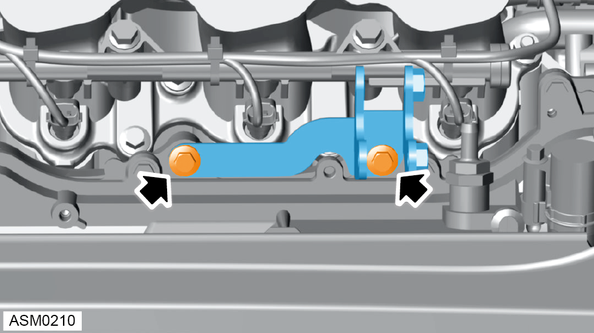
- Remove M8x55 bolts (x2) and remove lower supercharger bracket. Torque 24 Nm.
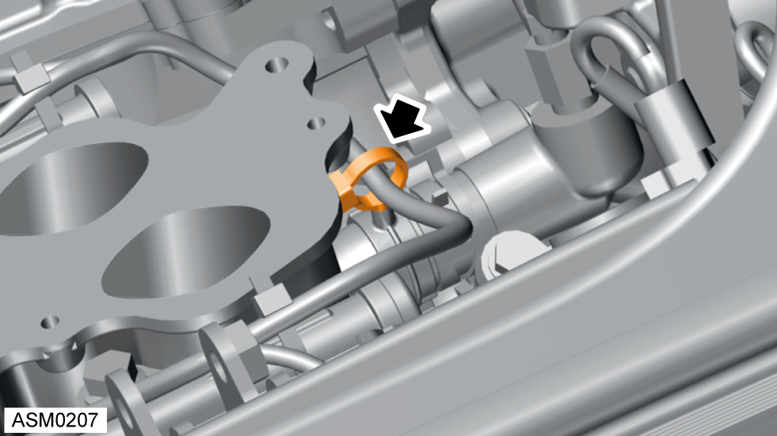
- Release fir tree clip securing harness to engine.
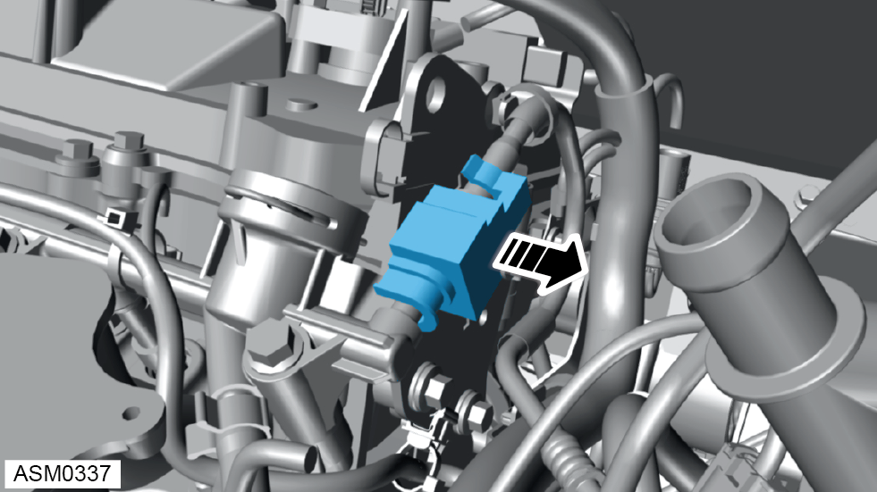
- Remove fuel pipe clamp.
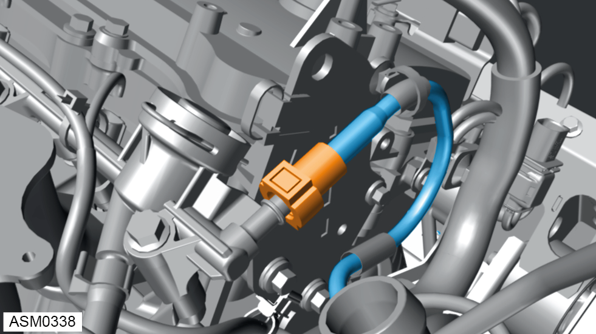
- Disconnect fuel pipe quick connector.
 CAUTION: Take care when removing fuel hose as there may still be residual fuel pressure.
CAUTION: Take care when removing fuel hose as there may still be residual fuel pressure.
NOTE: Wrap fuel pipe outlet with suitable cloth to absorb any spilled fuel.
NOTE: Protect fuel rail end connection by wrapping in suitable plastic.
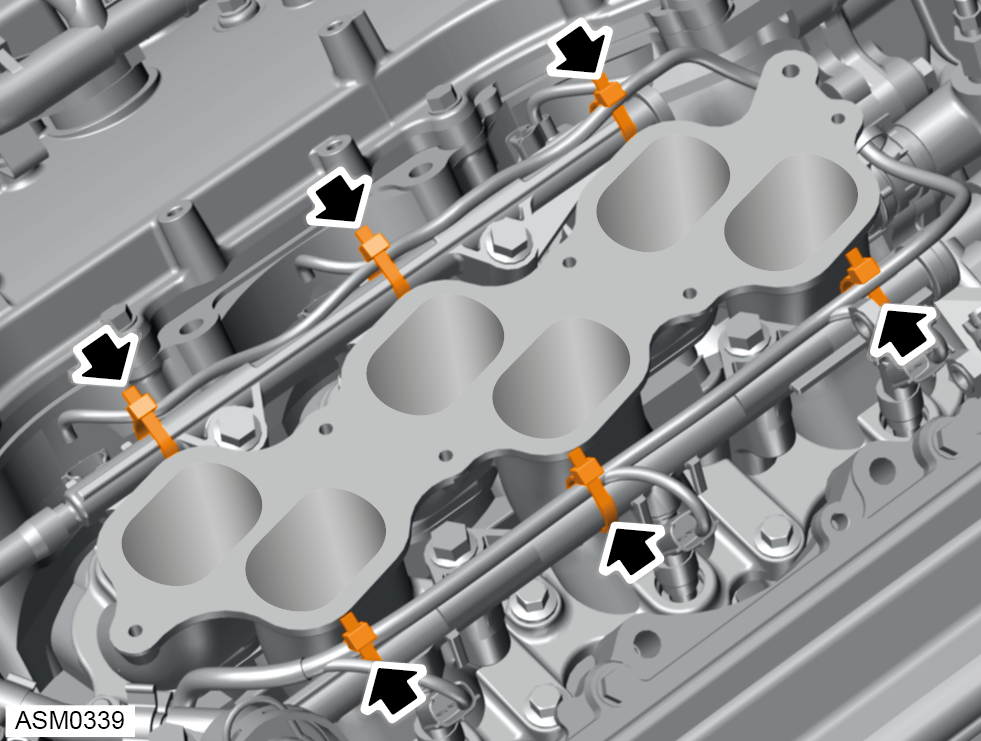
- Remove and discard cable ties (x6) securing engine harness to fuel rail.
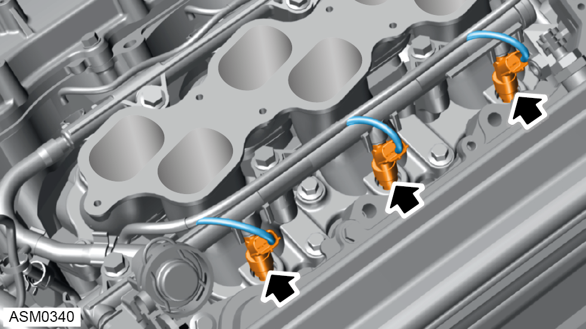
- Disconnect harness connectors (x3) from right side fuel injectors.
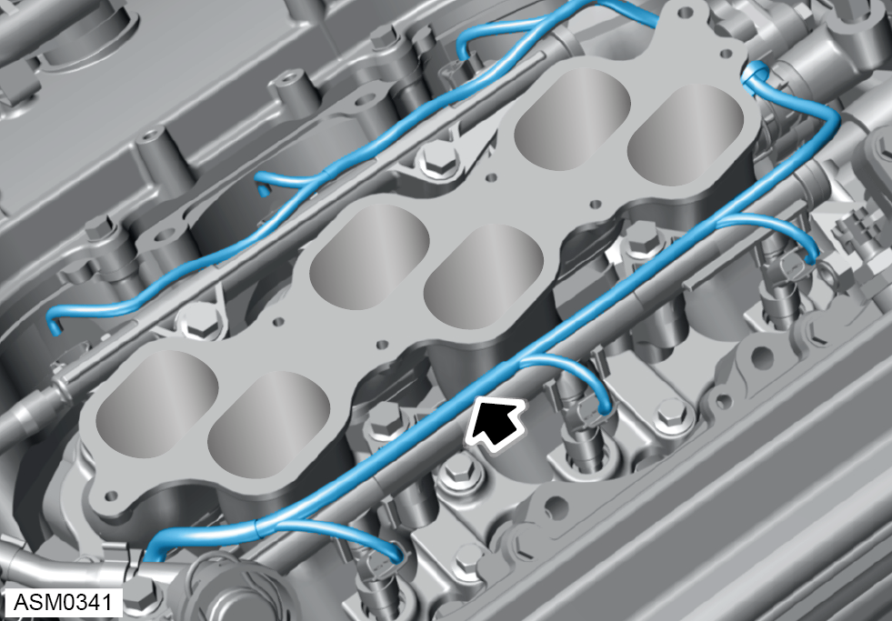
- Move engine harness aside.
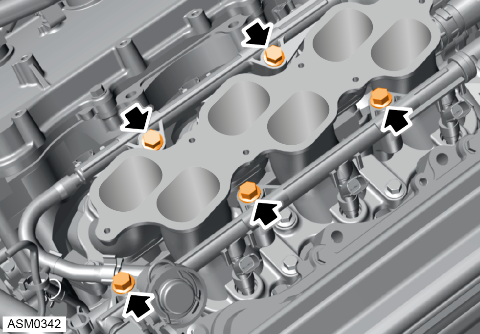
- Remove bolts (x5) securing fuel rail to intake manifold. Torque 21 Nm.
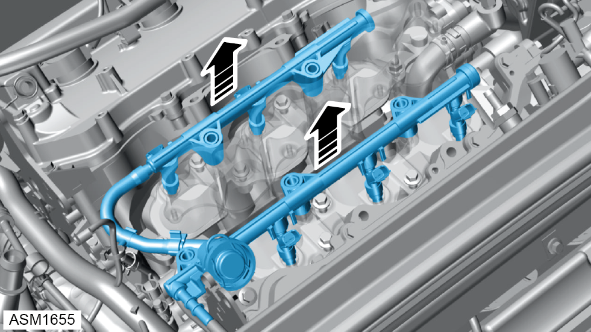
- Remove fuel rail and fuel injectors from intake manifold.
CAUTION: Take care not to drop fuel injectors when removing fuel rail.
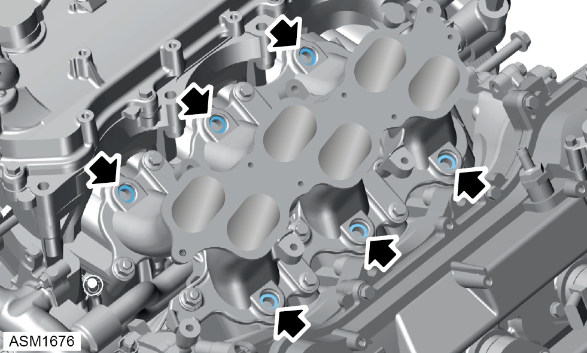
- Remove and discard insulators (x6) from intake manifold.
Do not carry out further disassembly if removing for access only.
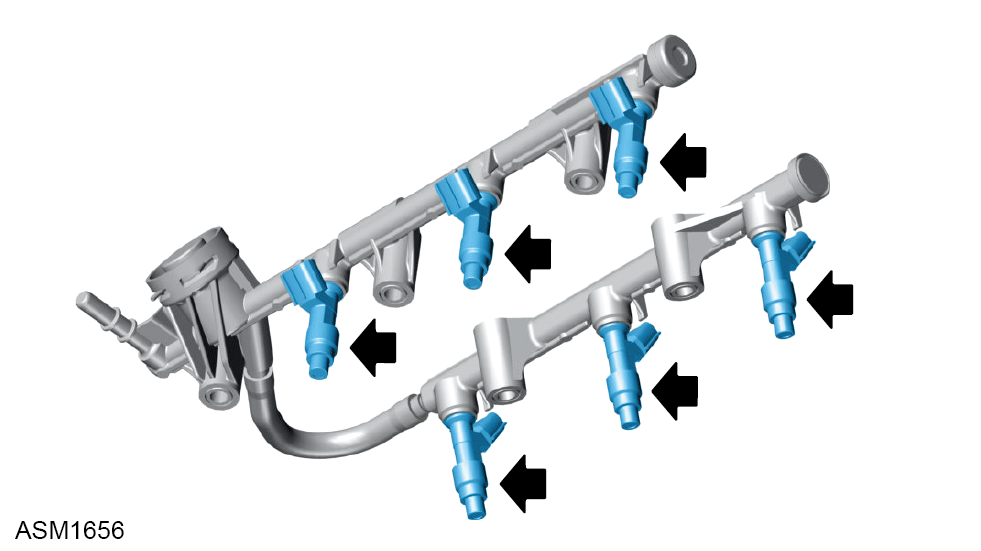
- Remove fuel injectors (x6) from fuel rail.
NOTE: Cover injector ports to prevent ingress.
NOTE: Be prepared to catch any excess fluid.
NOTE: Remove the O-rings (x6) from the injectors.
Installation
- Installation is the reverse of removal procedure except for the following:
- Install new insulators (x6) to intake manifold.
- Renew cable ties.
- Apply light coat of spindle oil or gasoline to O ring going to fuel rail.
CAUTION: Be careful not to twist the O-rings.
- Push and turn fuel injectors (x6) to install into fuel delivery pipes.
CAUTION: Check injectors turn smoothly. If not reinstall with new O-rings.
NOTE: Position fuel injector connectors outward.